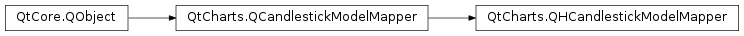

QtCharts.QHCandlestickModelMapper¶
Note
This class was introduced in Qt 5.7.
Synopsis¶
Functions¶
- def
closeColumn() - def
firstSetRow() - def
highColumn() - def
lastSetRow() - def
lowColumn() - def
openColumn() - def
setCloseColumn(closeColumn) - def
setFirstSetRow(firstSetRow) - def
setHighColumn(highColumn) - def
setLastSetRow(lastSetRow) - def
setLowColumn(lowColumn) - def
setOpenColumn(openColumn) - def
setTimestampColumn(timestampColumn) - def
timestampColumn()
Signals¶
- def
closeColumnChanged() - def
firstSetRowChanged() - def
highColumnChanged() - def
lastSetRowChanged() - def
lowColumnChanged() - def
openColumnChanged() - def
timestampColumnChanged()
Detailed Description¶
-
class
PySide2.QtCharts.QtCharts.QHCandlestickModelMapper([parent=nullptr])¶ Parameters: parent – PySide2.QtCore.QObject
-
PySide2.QtCharts.QtCharts.QHCandlestickModelMapper.closeColumn()¶ Return type: PySide2.QtCore.int
-
PySide2.QtCharts.QtCharts.QHCandlestickModelMapper.closeColumnChanged()¶
-
PySide2.QtCharts.QtCharts.QHCandlestickModelMapper.firstSetRow()¶ Return type: PySide2.QtCore.int
-
PySide2.QtCharts.QtCharts.QHCandlestickModelMapper.firstSetRowChanged()¶
-
PySide2.QtCharts.QtCharts.QHCandlestickModelMapper.highColumn()¶ Return type: PySide2.QtCore.int
-
PySide2.QtCharts.QtCharts.QHCandlestickModelMapper.highColumnChanged()¶
-
PySide2.QtCharts.QtCharts.QHCandlestickModelMapper.lastSetRow()¶ Return type: PySide2.QtCore.int
-
PySide2.QtCharts.QtCharts.QHCandlestickModelMapper.lastSetRowChanged()¶
-
PySide2.QtCharts.QtCharts.QHCandlestickModelMapper.lowColumn()¶ Return type: PySide2.QtCore.int
-
PySide2.QtCharts.QtCharts.QHCandlestickModelMapper.lowColumnChanged()¶
-
PySide2.QtCharts.QtCharts.QHCandlestickModelMapper.openColumn()¶ Return type: PySide2.QtCore.int
-
PySide2.QtCharts.QtCharts.QHCandlestickModelMapper.openColumnChanged()¶
-
PySide2.QtCharts.QtCharts.QHCandlestickModelMapper.setCloseColumn(closeColumn)¶ Parameters: closeColumn – PySide2.QtCore.int
-
PySide2.QtCharts.QtCharts.QHCandlestickModelMapper.setFirstSetRow(firstSetRow)¶ Parameters: firstSetRow – PySide2.QtCore.int
-
PySide2.QtCharts.QtCharts.QHCandlestickModelMapper.setHighColumn(highColumn)¶ Parameters: highColumn – PySide2.QtCore.int
-
PySide2.QtCharts.QtCharts.QHCandlestickModelMapper.setLastSetRow(lastSetRow)¶ Parameters: lastSetRow – PySide2.QtCore.int
-
PySide2.QtCharts.QtCharts.QHCandlestickModelMapper.setLowColumn(lowColumn)¶ Parameters: lowColumn – PySide2.QtCore.int
-
PySide2.QtCharts.QtCharts.QHCandlestickModelMapper.setOpenColumn(openColumn)¶ Parameters: openColumn – PySide2.QtCore.int
-
PySide2.QtCharts.QtCharts.QHCandlestickModelMapper.setTimestampColumn(timestampColumn)¶ Parameters: timestampColumn – PySide2.QtCore.int
-
PySide2.QtCharts.QtCharts.QHCandlestickModelMapper.timestampColumn()¶ Return type: PySide2.QtCore.int
-
PySide2.QtCharts.QtCharts.QHCandlestickModelMapper.timestampColumnChanged()¶
© 2018 The Qt Company Ltd. Documentation contributions included herein are the copyrights of their respective owners. The documentation provided herein is licensed under the terms of the GNU Free Documentation License version 1.3 as published by the Free Software Foundation. Qt and respective logos are trademarks of The Qt Company Ltd. in Finland and/or other countries worldwide. All other trademarks are property of their respective owners.